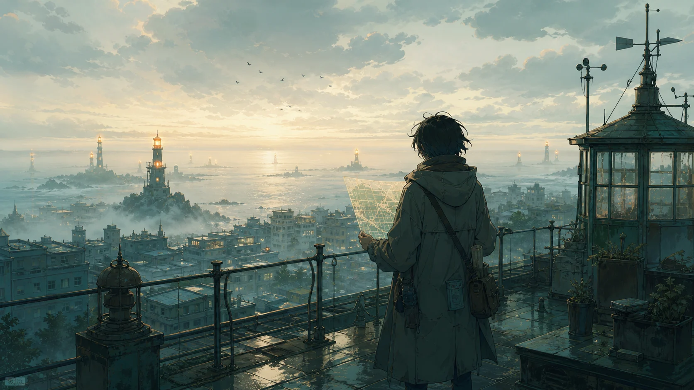
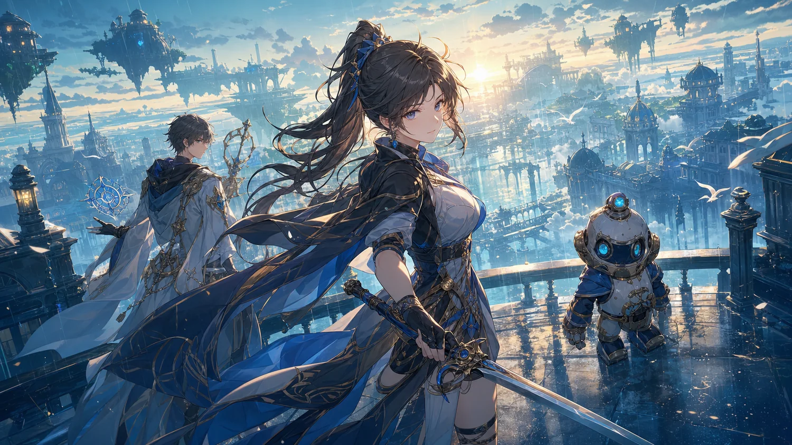
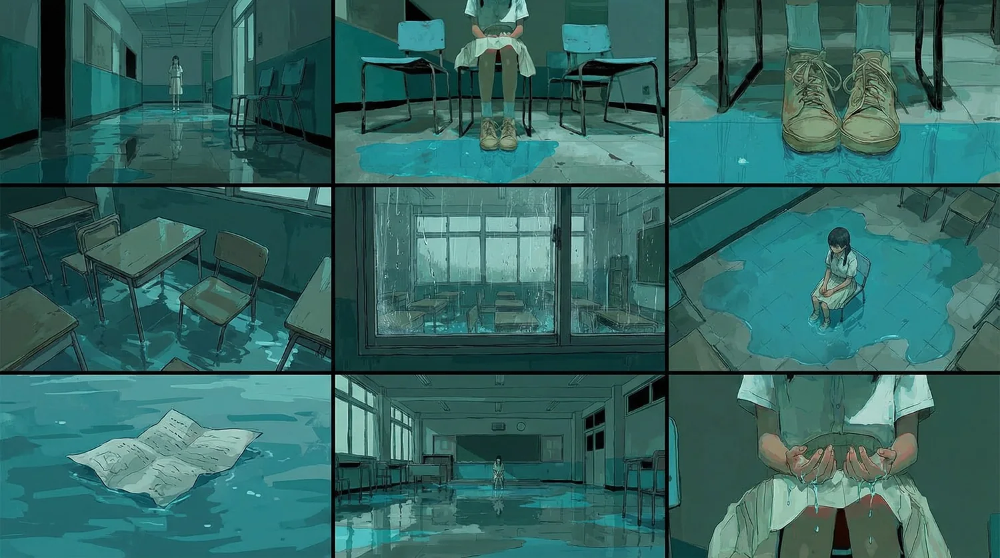
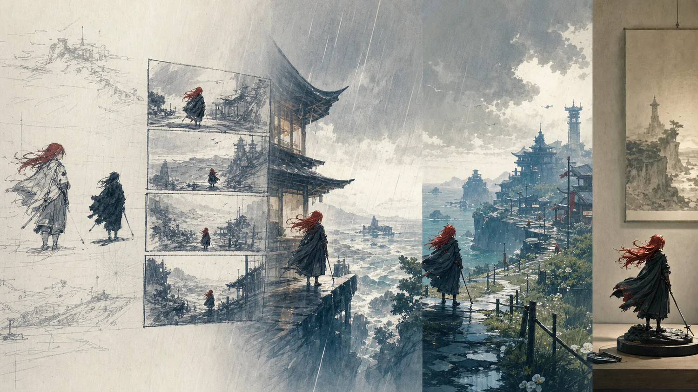
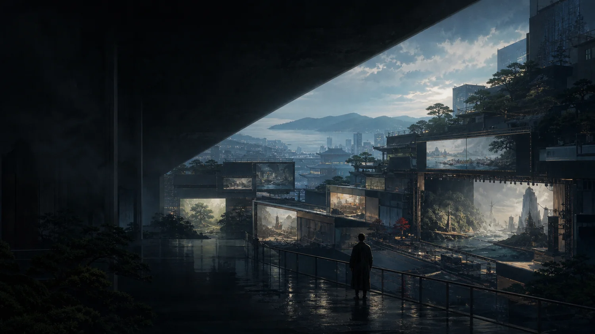
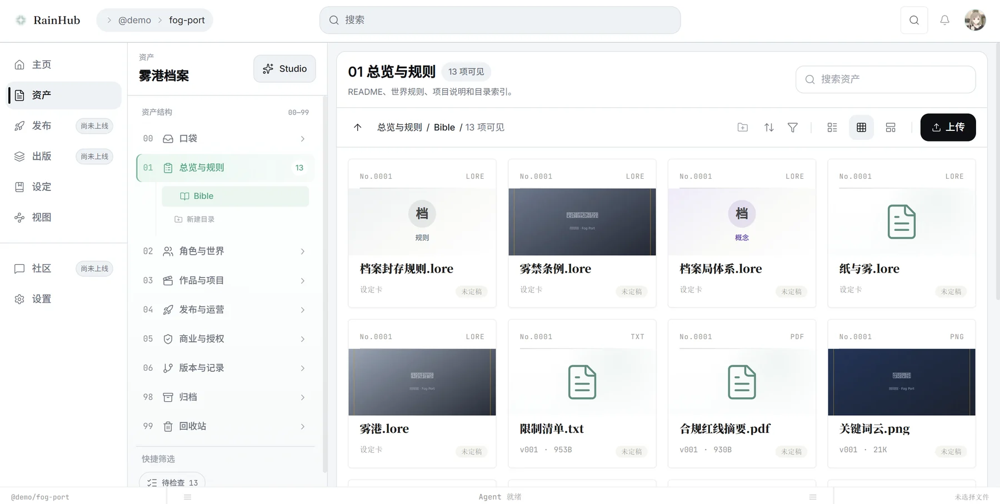

Narrative · Visual · Media Mix Shanghai / 2026
From one story
to an IP built to keep growing.
RealRain is a narrative and visual company working across brand expression and IP development. We connect story development, production, narrative assets and cross-media extensions in one continuous workflow.
Make the story.
Keep what makes it true.
A project should not scatter when delivery ends. We preserve characters, worlds, visual rules, sources, versions, approvals and rights boundaries as reusable narrative assets, so the next release does not restart from zero.
RainStudio drives production and validation. RainHub maintains project understanding and continuity. Together, they support comics, animation, moving image, game visuals and other Media Mix formats.
Let the work speak first.
Brand narratives, characters, comics, animation, game worlds and knowledge visualisation.





0106
From frame to continuity
Every delivery should become the starting point for the next.
We care about more than producing a single image or film. Characters, relationships, world rules and visual language need to hold together across releases and media.


Production and project understanding stay in sync.
These are not two disconnected products. RainStudio advances the work; RainHub preserves approved project understanding. Reviewed output returns to the asset system and becomes context for what comes next.
Production & validation
Turn an existing story into work that can be reviewed and delivered.
RainStudio organises project context, creative tasks, agent calls, human production and review across visual development, comics, animation and moving image.
- Story, character and visual direction
- Storyboard, comic, animation and moving image
- Agent collaboration with human quality control


Context & narrative assets
Keep project understanding alive after delivery.
RainHub creates a shared space for characters, worlds, source material, versions, approvals and rights boundaries, so teams and agents continue from confirmed context.
- Characters, relationships and world rules
- Sources, versions and approval records
- Context for the next medium and release


Start with the smallest complete work. Earn the next medium.
We test a direction with a controlled production, then preserve every approved character, world, visual decision and response. Commitment grows with evidence instead of beginning with a full adaptation.
-
01
Source
Existing story
Start from a brand idea, product concept, character, world or established IP.
-
02
Release
First complete work
Make a comic, animation, film or visual unit ready for review, release or a real business moment.
-
03
Canon
Narrative assets
Preserve characters, worlds, visual rules, sources, versions, approvals and rights boundaries.
-
04
Next medium
Media Mix
Use response and partnership conditions to decide the next release, medium or commercial window.
We work with people who already have a creative core.
We are most useful when a proposition, story, character, world or body of knowledge already exists and needs to become clear, coherent and extensible.
Brand expression & product launches
Develop brand propositions and product concepts into characters, scenes, comics, animation and moving image.
Established IP development
Enter new formats and communication moments while preserving the core setting and recognisable identity.
Games, animation, publishing & cultural destinations
Organise continuous visual development and cross-media production around characters, worlds and narrative assets.
Science, education & complex knowledge
Reduce the cost of understanding through structured narrative, diagrams, comics and moving image.
Start a story with us
If you already have a story, we can begin with its first complete work.
Brand narratives, IP development, visual production, comics, animation, game visuals and knowledge visualisation.
contact@realrain.co